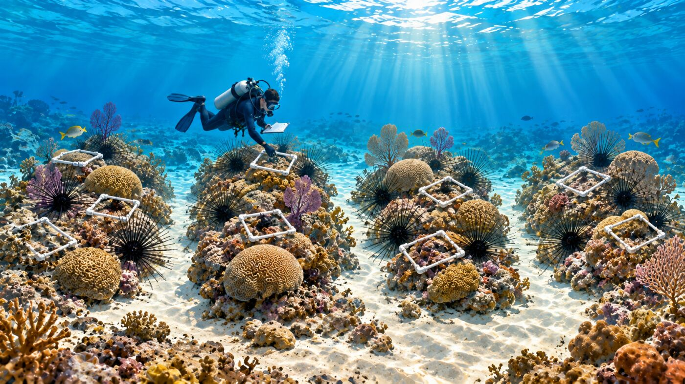
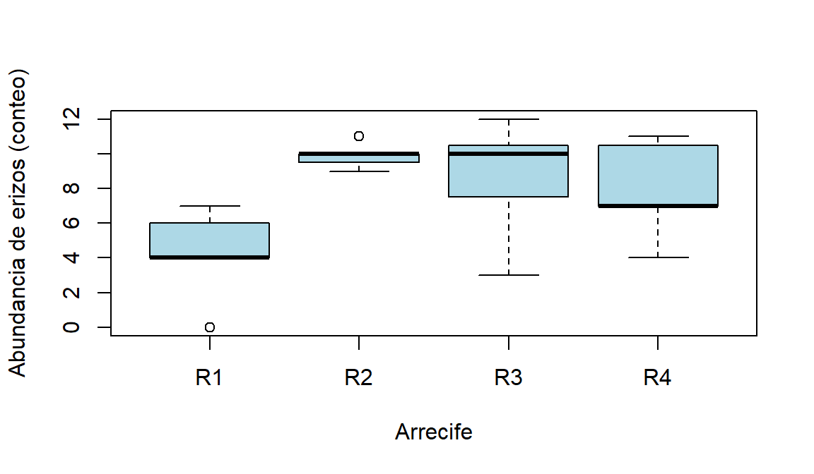
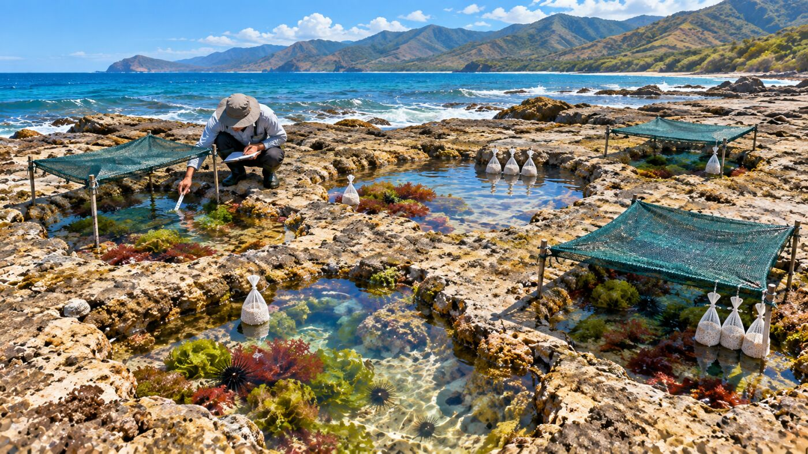
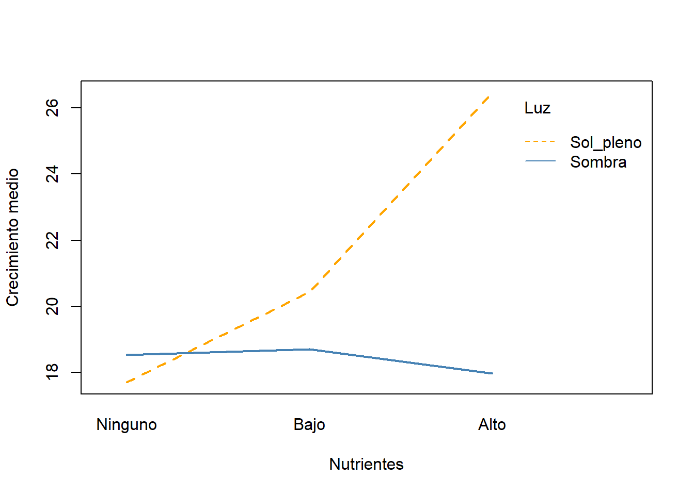
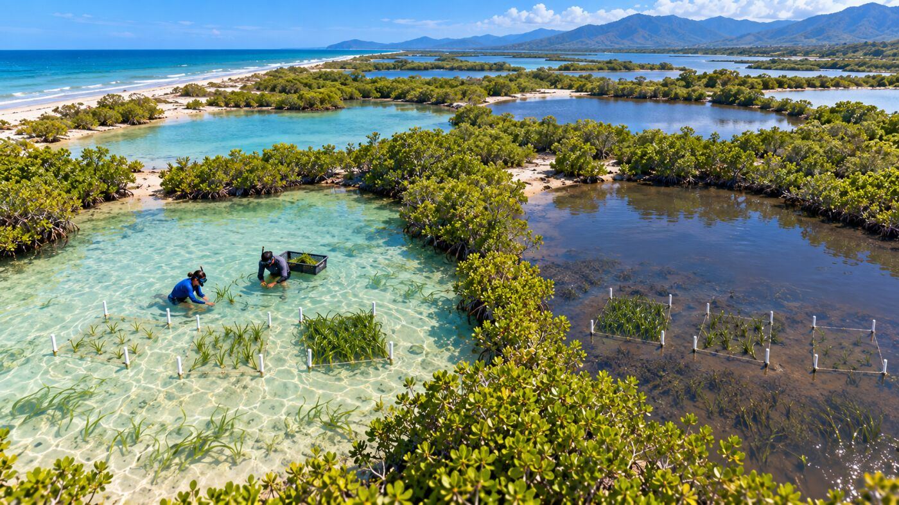
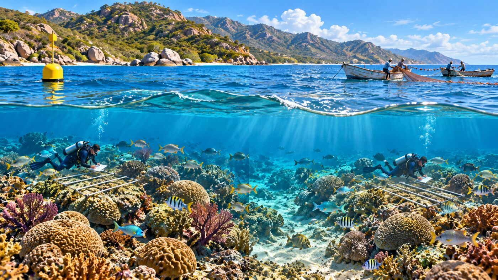
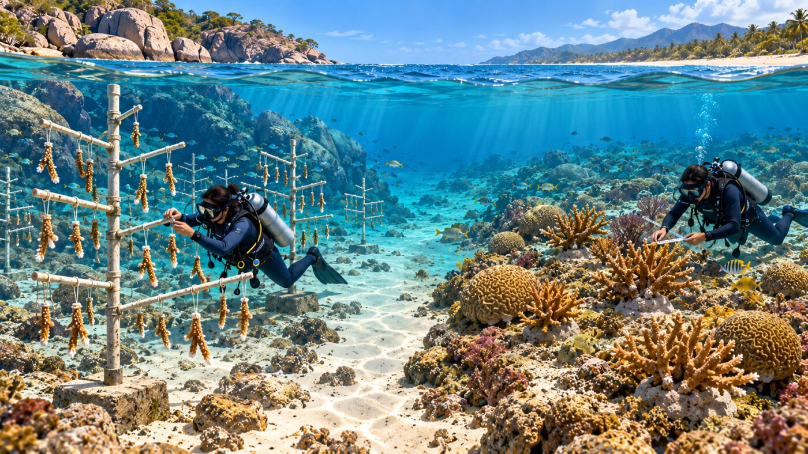
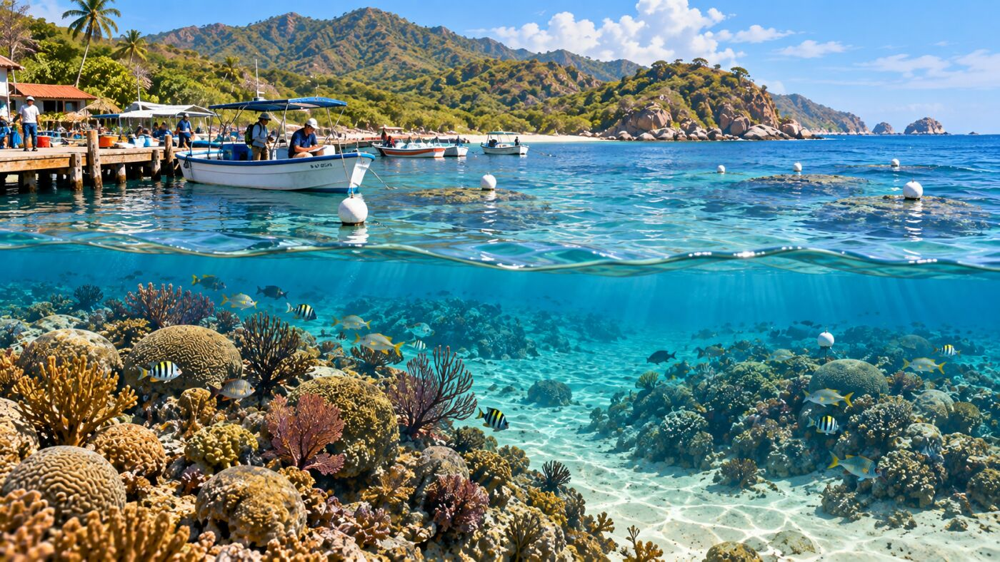
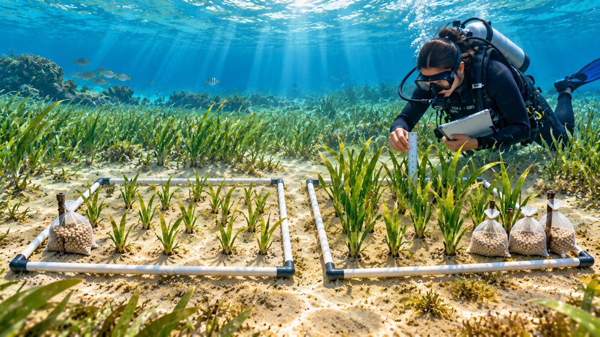

Cuestionario 2
Este es un material complementario al Taller 1 y al cuestionario 1 de opción múltiple. Mientras el cuestionario evalúa si se reconoce la respuesta correcta, esta guía entrena dos habilidades necesarias para un proyecto de grado propio: proponer un diseño desde cero, y detectar cuándo un diseño (propio o ajeno) tiene un problema importante. Tiene dos partes:
- Parte A — Diseñar: 4 escenarios nuevos, uno por cada tipo de diseño del Taller 1. No se indica de entrada qué tipo es.
- Parte B — Encontrar el error: 4 viñetas de diseños ya “ejecutados”, cada una con exactamente uno de los 4 errores vistos en las diapositivas (pseudoreplicación, confusión de factores, falta de aleatorización, ausencia de control). El trabajo consiste en diagnosticar, no en calcular.
Cada ejercicio tiene una respuesta guardada en un bloque colapsable — conviene intentar resolverlo antes de abrirlo.
Parte A — Diseñar: escenarios nuevos
A1 — Dispositivo excluidor de tortugas (TED)
NotaEl contexto
Un equipo de manejo pesquero quiere saber si instalar un dispositivo excluidor de tortugas (TED) en las redes de arrastre artesanal reduce la captura incidental de tortugas carey juveniles. Trabajan en 3 zonas de pesca (Norte, Centro, Sur) que, por su batimetría y corrientes, se sabía de antemano que tienen niveles base de captura incidental distintos. En cada zona probaron 4 faenas con red convencional y 4 con red equipada con TED.
- ¿Cuál es la unidad experimental?
- Las 3 zonas tienen niveles base de captura distintos, algo que el equipo ya sabía antes de salir a pescar. ¿Qué principio de diseño aprovecha esa información a favor del análisis?
- ¿Qué tipo de diseño es este?
- Escribir la fórmula de
aov()que se usaría.
Código
set.seed(2026) # Fijar la semilla
zona <- gl(3, 8,
labels = c("Zona_Norte", "Zona_Central",
"Zona_Sur")) # Crea zonas
ted <- gl(2, 4, 24,
labels = c("Sin_TED", "Con_TED")) # Crea tratamientos
efecto_ted <- c(Sin_TED = 0, Con_TED = -4.5)[ted] # Define efecto TED
efecto_zona <- c(Zona_Norte = 0, Zona_Central = 3,
Zona_Sur = -2)[zona] # Define efecto zona
capturas_tortuga <- round(
pmax(0, rnorm(24,
mean = 9 + efecto_ted + efecto_zona,
sd = 2))) # Genera capturas
bycatch <- data.frame(
zona, ted, capturas_tortuga) # Crea tabla
str(bycatch) # Explora estructura'data.frame': 24 obs. of 3 variables:
$ zona : Factor w/ 3 levels "Zona_Norte","Zona_Central",..: 1 1 1 1 1 1 1 1 2 2 ...
$ ted : Factor w/ 2 levels "Sin_TED","Con_TED": 1 1 1 1 2 2 2 2 1 1 ...
$ capturas_tortuga: num 10 7 9 9 3 0 3 2 12 11 ...Conviene ejecutar una propuesta de análisis antes de seguir leyendo.
TipVerificación del razonamiento
1. Unidad experimental: cada faena de pesca (recibe, de forma independiente, red con o sin TED).
2. Principio: bloqueo — la zona es una fuente de variación conocida de antemano, no el foco de la pregunta.
3. Tipo de diseño: bloques al azar, con zona como bloque y ted como tratamiento.
4. Modelo:
Código
# Anova
mod_a1 <- aov(
capturas_tortuga ~ ted + zona,
data = bycatch
) # Ajusta modelo
summary(mod_a1) # Muestra ANOVA Df Sum Sq Mean Sq F value Pr(>F)
ted 1 176.04 176.04 51.34 6.13e-07 ***
zona 2 82.33 41.17 12.01 0.000376 ***
Residuals 20 68.58 3.43
---
Signif. codes: 0 '***' 0.001 '**' 0.01 '*' 0.05 '.' 0.1 ' ' 1Se compara sin bloquear:
Código
# Resumen del anova
summary(aov(capturas_tortuga ~ ted, data = bycatch)) Df Sum Sq Mean Sq F value Pr(>F)
ted 1 176.0 176.04 25.66 4.49e-05 ***
Residuals 22 150.9 6.86
---
Signif. codes: 0 '***' 0.001 '**' 0.01 '*' 0.05 '.' 0.1 ' ' 1En este caso el efecto del TED ya era significativo sin bloquear — pero, al bloquear por zona, el error residual baja (de 6.86 a 3.43) y el estadístico F del TED prácticamente se duplica (de 25.7 a 51.3). Bloquear no solo “revela” efectos escondidos (como se vio en el Taller 1); también hace más preciso un efecto que ya era detectable, y de paso muestra que la zona en sí también importa.
A2 — Erizos entre arrecifes

NotaContexto
Un equipo quiere comparar la abundancia de erizos de mar (Diadema antillarum) entre 4 arrecifes con profundidad, tipo de sustrato y exposición al oleaje muy similares entre sí — no hay ninguna razón conocida para esperar que un arrecife sea sistemáticamente distinto de otro antes de muestrear. Contaron erizos en 7 cuadrantes por arrecife.
- ¿Hay alguna fuente de variación conocida de antemano que deba controlarse?
- ¿Qué tipo de diseño es este?
- Escribir la fórmula de
aov()que se usaría.
Código
set.seed(2026) # Fijar la semilla
arrecife <- gl(4, 7,
labels = c("R1", "R2", "R3", "R4")) # Crea arrecifes
medias_ar <- c(R1 = 6, R2 = 11, R3 = 9, R4 = 7)[arrecife] # Asigna medias
erizos <- round(
pmax(0, rnorm(28, mean = medias_ar, sd = 2.3))
) # Genera abundancias
diadema <- data.frame(
arrecife, erizos) # Crea tabla
boxplot(
erizos ~ arrecife,
data = diadema,
col = "lightblue",
xlab = "Arrecife",
ylab = "Abundancia de erizos (conteo)") # Grafica distribución
TipVerificación del razonamiento
Sin fuente de variación conocida que controlar → diseño completamente al azar (CA), igual que la riqueza de macroalgas del Taller 1. No hay bloque porque no hay nada identificado de antemano que bloquear — eso es precisamente lo que distingue un CA de un diseño de bloques.
Código
mod_a2 <- aov(erizos ~ arrecife, data = diadema) # Ajusta modelo
summary(mod_a2) # Muestra el ANOVA Df Sum Sq Mean Sq F value Pr(>F)
arrecife 3 115.9 38.62 7.083 0.00143 **
Residuals 24 130.9 5.45
---
Signif. codes: 0 '***' 0.001 '**' 0.01 '*' 0.05 '.' 0.1 ' ' 1El resultado es significativo — hay diferencias reales entre arrecifes, a pesar de que a priori no había ninguna razón conocida para esperarlas. Eso es información nueva que el estudio genera, no algo que el diseño necesitaba controlar de antemano.
A3 — Luz y nutrientes en piscinas intermareales

NotaEl contexto
Un equipo quiere saber si la exposición solar (sol pleno / sombra) y el enriquecimiento de nutrientes (ninguno / bajo / alto) afectan el crecimiento de macroalgas en piscinas intermareales — y, sobre todo, si el efecto de la luz depende del nivel de nutrientes disponible. Cruzaron ambos factores con 3 réplicas por combinación.
- ¿Cuántos factores hay, y qué pregunta específica (más allá del efecto de cada uno por separado) motiva cruzarlos?
- ¿Qué tipo de diseño es este?
- Escribir la fórmula de
aov()que se usaría.
Código
set.seed(2026) # Fija semilla
luz <- gl(2, 3, 18,
labels = c("Sol_pleno", "Sombra")) # Crea niveles luz
nutrientes <- gl(3, 1, 18,
labels = c("Ninguno", "Bajo", "Alto")) # Crea nutrientes
mu_a3 <- matrix(
c(18, 22, 28,
18, 19, 20),
nrow = 2,
byrow = TRUE,
dimnames = list(
c("Sol_pleno", "Sombra"),
c("Ninguno", "Bajo", "Alto")
)
) # Define medias
medias_a3 <- mu_a3[
cbind(as.integer(luz), as.integer(nutrientes))
] # Asigna medias
crecimiento_macroalgas <- round(
pmax(0, rnorm(18, mean = medias_a3, sd = 2)), 1) # Genera crecimiento
piscinas <- data.frame(
luz, nutrientes, crecimiento_macroalgas) # Crea tabla
str(piscinas) # Explora estructura'data.frame': 18 obs. of 3 variables:
$ luz : Factor w/ 2 levels "Sol_pleno","Sombra": 1 1 1 2 2 2 1 1 1 2 ...
$ nutrientes : Factor w/ 3 levels "Ninguno","Bajo",..: 1 2 3 1 2 3 1 2 3 1 ...
$ crecimiento_macroalgas: num 19 19.8 28.3 17.8 17.7 15 16.5 20 28.2 17.1 ...
TipVerificación del razonamiento
Dos factores cruzados, con interés explícito en si interactúan → diseño factorial (2 × 3), misma lógica que refugio × densidad en langosta (Taller 1).
Código
mod_a3 <- aov(crecimiento_macroalgas ~ luz * nutrientes, data = piscinas)
summary(mod_a3) Df Sum Sq Mean Sq F value Pr(>F)
luz 1 44.18 44.18 10.657 0.00677 **
nutrientes 2 51.87 25.93 6.256 0.01377 *
luz:nutrientes 2 69.74 34.87 8.412 0.00521 **
Residuals 12 49.75 4.15
---
Signif. codes: 0 '***' 0.001 '**' 0.01 '*' 0.05 '.' 0.1 ' ' 1Código
interaction.plot(piscinas$nutrientes, piscinas$luz, piscinas$crecimiento_macroalgas,
xlab = "Nutrientes", ylab = "Crecimiento medio", trace.label = "Luz",
col = c("orange", "steelblue"), lwd = 2)
La interacción luz:nutrientes es significativa: en sol pleno, agregar nutrientes dispara el crecimiento; en sombra, casi no importa cuánto nutriente haya — la luz es el factor limitante ahí, y los nutrientes no pueden compensarlo. Ese matiz solo se observa con un diseño factorial.
A4 — Restauración de pastos marinos: sedimento y densidad

NotaEl contexto
Un proyecto de restauración de pastos marinos quiere comparar dos tipos de sedimento (arenoso / fangoso) y tres densidades de siembra (baja / media / alta). El tipo de sedimento es una característica de toda la laguna costera — no se puede cambiar la composición del sedimento en una sola parcela dentro de la laguna, es una propiedad de la laguna completa. La densidad de siembra, en cambio, sí se puede variar libremente dentro de cada laguna, parcela por parcela. Trabajaron en 6 lagunas (3 de cada tipo de sedimento), con 3 parcelas de densidad distinta en cada una.
- ¿A qué escala se puede asignar cada factor: laguna completa, o parcela dentro de la laguna?
- ¿Qué tipo de diseño es este, y por qué no es simplemente un factorial como el ejercicio A3?
- Escribir la fórmula de
aov()que se usaría, incluyendo el términoError()si corresponde.
Código
set.seed(2026) # Fijar la semilla
sedimento <- gl(2, 9, 18,
labels = c("Arenoso", "Fangoso")) # Crea sedimentos
laguna <- factor(rep(1:6, each = 3)) # Crea lagunas
densidad_siembra <- gl(
3, 1, 18,
labels = c("Baja", "Media", "Alta")) # Crea densidades
efecto_sed <- c(Arenoso = 0, Fangoso = -8)[sedimento] # Define efecto sedimento
efecto_dens <- c(
Baja = 0, Media = 5, Alta = 8
)[densidad_siembra] # Define efecto densidad
efecto_laguna <- rep(
rnorm(6, mean = 0, sd = 2),
each = 3
) # Añade variación
supervivencia_pastos <- round(
pmax(0, pmin(100,
55 + efecto_sed + efecto_dens +
efecto_laguna +
rnorm(18, sd = 2))), 1) # Genera supervivencia
restauracion <- data.frame(
sedimento, laguna, densidad_siembra,
supervivencia_pastos) # Crea tabla
str(restauracion) # Explora estructura'data.frame': 18 obs. of 4 variables:
$ sedimento : Factor w/ 2 levels "Arenoso","Fangoso": 1 1 1 1 1 1 1 1 1 2 ...
$ laguna : Factor w/ 6 levels "1","2","3","4",..: 1 1 1 2 2 2 3 3 3 4 ...
$ densidad_siembra : Factor w/ 3 levels "Baja","Media",..: 1 2 3 1 2 3 1 2 3 1 ...
$ supervivencia_pastos: num 54.6 59 64.3 51.9 57 59.4 54.8 59.8 58.2 49.5 ...
TipVerificación del razonamiento
1. Escala: sedimento se asigna a nivel de laguna completa (parcela grande); densidad se asigna a nivel de parcela dentro de la laguna (subparcela).
2. Tipo de diseño: parcelas divididas. No es un factorial simple porque las dos aleatorizaciones ocurren a escalas distintas — igual que exposición × tratamiento en el ejemplo de manglares del Taller 1. Un aov() factorial normal usaría un solo término de error para todo, lo que subestimaría la incertidumbre real del factor de parcela grande (sedimento).
Código
# anova
mod_a4 <- aov(
supervivencia_pastos ~ sedimento *
densidad_siembra + Error(laguna),
data = restauracion) # Ajustar modelo
summary(mod_a4) # Muestra ANOVA
Error: laguna
Df Sum Sq Mean Sq F value Pr(>F)
sedimento 1 298.49 298.49 15.51 0.017 *
Residuals 4 76.96 19.24
---
Signif. codes: 0 '***' 0.001 '**' 0.01 '*' 0.05 '.' 0.1 ' ' 1
Error: Within
Df Sum Sq Mean Sq F value Pr(>F)
densidad_siembra 2 184.08 92.04 20.058 0.000764 ***
sedimento:densidad_siembra 2 3.50 1.75 0.381 0.694867
Residuals 8 36.71 4.59
---
Signif. codes: 0 '***' 0.001 '**' 0.01 '*' 0.05 '.' 0.1 ' ' 1El resultado sale en dos bloques de error (laguna y Within), cada uno con su propia incertidumbre — exactamente la firma de un split-plot bien especificado.
Parte B — Encontrar el error: diagnóstico de diseños fallidos
Cada viñeta describe un estudio ya “hecho”, con exactamente uno de los 4 errores de la diapositiva “Errores que invalidan un diseño”. Se debe identificar cuál, y cómo se rediseñaría.
B1 — Abundancia de peces en dos áreas marinas protegidas

NotaLa viñeta
Un investigador quiere comparar la abundancia de peces entre un área marina protegida (AMP) de no-pesca y una zona de uso múltiple. Seleccionó 1 sitio representativo de cada tipo, y dentro de cada sitio hizo 20 transectos de censo visual. Corrió un t-test tratando los 40 transectos (20 + 20) como 40 observaciones independientes.
- ¿Cuál es la unidad experimental real: el transecto, o el sitio?
- Con esa unidad experimental real, ¿cuántas réplicas verdaderas tiene cada grupo?
- ¿Qué error de diseño es este?
Código
set.seed(2026) # Fija semilla
efecto_sitio_amp1 <- rnorm(1, mean = 0, sd = 4) # Genera efecto sitio
efecto_sitio_amp2 <- rnorm(1, mean = 0, sd = 4) # Genera efecto sitio
abundancia_amp1 <- round(
pmax(0, rnorm(20,
mean = 30 + efecto_sitio_amp1,
sd = 2))) # Genera abundancia
abundancia_amp2 <- round(
pmax(0, rnorm(20,
mean = 30 + efecto_sitio_amp2,
sd = 2))) # Genera abundancia
TipVerificación del razonamiento
Error: pseudoreplicación. El tratamiento (“tipo de AMP”) se asignó a nivel de sitio, no de transecto — con 1 sitio por tipo, hay exactamente 1 réplica real por grupo. Los 20 transectos dentro de un mismo sitio comparten el mismo entorno y no son independientes entre sí.
Para hacerlo vívido: en esta simulación no se programó ningún efecto real del tipo de AMP — la única diferencia entre los dos grupos es ruido aleatorio a nivel de sitio. Aun así:
Código
# Comparación de medias
t.test(abundancia_amp1, abundancia_amp2)
Welch Two Sample t-test
data: abundancia_amp1 and abundancia_amp2
t = 8.3455, df = 37.967, p-value = 4.061e-10
alternative hypothesis: true difference in means is not equal to 0
95 percent confidence interval:
3.787106 6.212894
sample estimates:
mean of x mean of y
31.3 26.3 El t-test ingenuo puede salir “significativo” (p = 4.06e-10), a pesar de que no hay ningún efecto real del tratamiento — es puro ruido de sitio disfrazado de señal, porque el análisis cuenta 40 “réplicas” donde en realidad solo hay 2.
Cómo rediseñarlo: muestrear varios sitios (no solo 1) por tipo de AMP, y usar el sitio como la unidad de análisis — exactamente el mismo problema que la Parte 0 del Taller 1, aplicado aquí a una comparación real.
B2 — Técnica de restauración de coral

NotaLa viñeta
Un equipo compara dos técnicas de restauración coralina — fragmentación asistida vs. trasplante directo. Por razones logísticas, la técnica de fragmentación se aplicó solo en el Sitio X, y el trasplante directo solo en el Sitio Y. Midieron el crecimiento de 15 colonias en cada sitio y compararon las técnicas con un t-test.
- ¿Qué cambia junto con la técnica, sin que el diseño lo pueda separar?
- Si encuentran una diferencia significativa entre técnicas, ¿pueden atribuirla honestamente a la técnica?
- ¿Qué error de diseño es este?
Código
set.seed(2026) # Fija semilla
n_frag <- 15 # Define réplicas
sitio_efecto_X <- 8 # Define efecto X
sitio_efecto_Y <- 0 # Define efecto Y
crecimiento_A_sitioX <- round(
pmax(0, rnorm(n_frag,
mean = 20 + sitio_efecto_X,
sd = 3)), 1) # Genera crecimiento
crecimiento_B_sitioY <- round(
pmax(0, rnorm(n_frag,
mean = 20 + sitio_efecto_Y,
sd = 3)), 1) # Genera crecimiento
TipVerificación del razonamiento
Error: confusión de factores (confounding). La técnica y el sitio cambian exactamente juntos — cada colonia con fragmentación también está en el Sitio X, y cada colonia con trasplante también está en el Sitio Y. No hay forma de separar estadísticamente “efecto de la técnica” de “efecto del sitio”.
En esta simulación se programó una diferencia real entre sitios (el Sitio X tiene mejores condiciones) y ninguna diferencia real entre técnicas. Aun así:
Código
# Comparación de las dos muestras
t.test(crecimiento_A_sitioX, crecimiento_B_sitioY)
Welch Two Sample t-test
data: crecimiento_A_sitioX and crecimiento_B_sitioY
t = 4.3828, df = 27.581, p-value = 0.0001536
alternative hypothesis: true difference in means is not equal to 0
95 percent confidence interval:
2.377629 6.555705
sample estimates:
mean of x mean of y
26.01333 21.54667 Sale claramente “significativo” (p = 1.54e-04) — pero es enteramente atribuible al sitio, no a la técnica. Con este diseño, es imposible saberlo a partir de los datos.
Cómo rediseñarlo: aplicar ambas técnicas en ambos sitios (diseño factorial técnica × sitio), o aplicar cada técnica en varios sitios asignados al azar — cualquiera de los dos rompe la confusión entre técnica y sitio.
B3 — Selección de sitios por accesibilidad

NotaLa viñeta
Para comparar la cobertura de coral entre una zona con alto tráfico de embarcaciones y una con bajo tráfico, un estudiante eligió los sitios de muestreo de la zona de alto tráfico entre los más cercanos y accesibles en bote desde el muelle, y los sitios de la zona de bajo tráfico entre los más alejados y de difícil acceso, “para ahorrar tiempo de navegación”.
- ¿Qué otras características ambientales podrían estar correlacionadas con “qué tan accesible es un sitio en bote” (profundidad, protección del oleaje, cercanía a la costa)?
- ¿Qué error de diseño es este?
TipVerificación del razonamiento
Error: falta de aleatorización. La accesibilidad en bote casi nunca es independiente de otras variables ambientales (profundidad, oleaje, distancia a la costa, sedimentación) — al seleccionar los sitios por conveniencia en vez de al azar, cualquiera de esas variables no medidas puede ser la verdadera causa de una diferencia observada, disfrazada de “efecto del tráfico de embarcaciones”. Es el mismo principio revisado en la Parte 0 del Taller 1 (selección de puntos de muestreo con sample()), pero aquí se saltó por conveniencia logística.
Cómo rediseñarlo: generar coordenadas candidatas dentro de cada zona y seleccionar los sitios de muestreo al azar entre ellas (con sample()), aceptando el costo logístico adicional — o, si de verdad no es viable navegar a sitios lejanos, medir y reportar honestamente las covariables ambientales de cada sitio para poder controlarlas en el análisis.
B4 — Dosis de fertilizante en restauración de pastos marinos

NotaLa viñeta
Un proyecto de restauración prueba dos dosis de un fertilizante nuevo (dosis baja, dosis alta) sobre el crecimiento de plántulas de pasto marino trasplantadas. No incluyeron un grupo sin fertilizante, “porque el interés es solo comparar las dos dosis entre sí”. Encontraron que la dosis alta produce más crecimiento que la baja, y concluyeron que el fertilizante mejora la restauración.
- Con este diseño, ¿pueden saber si cualquier dosis de fertilizante mejora el crecimiento frente a no aplicar nada?
- ¿Qué error de diseño es este?
TipVerificación del razonamiento
Error: ausencia de control. Comparar dosis baja vs. alta permite concluir que entre esas dos, la alta produce más crecimiento — pero no dice nada sobre si el fertilizante en sí mejora la restauración frente a no usar nada. Es posible, por ejemplo, que ambas dosis sean peores que no fertilizar (si el fertilizante favorece algas epífitas que compiten con el pasto), y aun así la dosis alta “gane” la comparación entre las dos.
Cómo rediseñarlo: agregar un tercer grupo sin fertilizante (control), para poder comparar cada dosis contra la línea base real, no solo entre sí.
Cierre
Estos 8 ejercicios cubren, de extremo a extremo, lo que se hará una y otra vez al diseñar un proyecto de investigación propio: mirar un sistema aún desconocido, decidir qué estructura de diseño le queda, y —igual de importante— revisar el propio diseño (o el de un compañero) buscando estos mismos 4 errores antes de salir a campo. Ese hábito de revisión es, en la práctica, más valioso que memorizar cuál fórmula de aov() usar.
Referencias
- Quinn, G. P., & Keough, M. J. (2024). Experimental Design and Data Analysis for Biologists (2nd ed.). Cambridge University Press. — Capítulos sobre diseños de bloques, factoriales y de parcelas divididas. (enlace_ejercicios)
- Logan, M. (2011). Biostatistical Design and Analysis Using R. Wiley-Blackwell. — Capítulo sobre asignación aleatoria de tratamientos y estructura de diseños. (enlace_ejercicios)
Nota
Los ejemplos y datasets de este taller son de elaboración propia para este curso; no reproducen los ejercicios ni el código de las fuentes citadas.